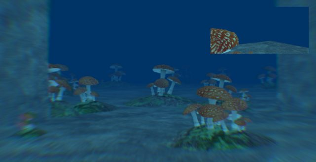
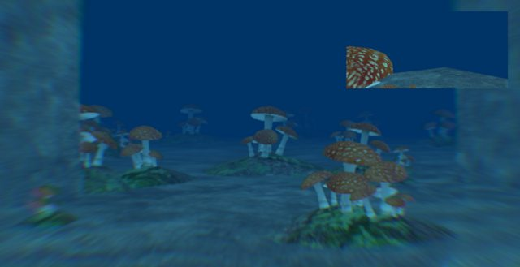

rasteron
It’s been awhile so here’s some Chromatic Aberration for Urho3D…

[gist]https://gist.github.com/299475c27a217ea62b168d21a5920f2a[/gist]
[gist]https://gist.github.com/fa51a216bcb8a1f1cf2eb627cc65c58b[/gist]
enjoy 

It’s been awhile so here’s some Chromatic Aberration for Urho3D…

[gist]https://gist.github.com/299475c27a217ea62b168d21a5920f2a[/gist]
[gist]https://gist.github.com/fa51a216bcb8a1f1cf2eb627cc65c58b[/gist]
enjoy